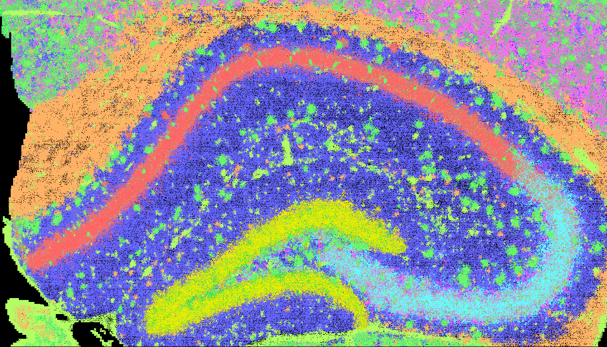

10X VisiumHD Starter Tutorial¶
Input Data¶
The input data originates from the mouse hippocampus and is extracted from an official release of mouse brain spatial gene expression (SGE) data.
File Format
Visium HD slides use a 2×2 µm grid of barcoded squares (square_002um) for high-resolution spatial gene mapping. The SGE file format comprises several key files as below:
barcodes.tsv.gz – spatial barcode for tissue locations
1 2 3 | |
- Column 1: spatial barcodes corresponding to specific locations on the tissue section.
features.tsv.gz – feature metadata
1 2 3 | |
- Column 1: Feature ID
- Column 2: Feature symbol
- Column 3: Features types
matrix.mtx.gz – expression count matrix
1 2 3 4 5 6 | |
Header: Initial lines form the header, declaring the matrix's adherence to the Market Matrix (MTX) format, outlining its traits. This may include comments (lines beginning with%) for extra metadata, all marked by a “%”.Dimensions: Following the header, the first line details the matrix dimensions: the count of rows (features), columns (barcodes), and non-zero entries.Data Entries: Post-dimensions, subsequent lines enumerate non-zero entries in seven columns: row index (feature index), column index (barcode index), and one value presenting the expression count per barcode per feature.
tissue_positions.parquet – spatial barcode metadata
1 2 | |
barcode: Unique spatial barcode associated with each capture spot.in_tissue: Binary flag (1 = in tissue, 0 = background) indicating whether the spot falls within the tissue boundary.array_row,array_col: Integer indices representing the position of the spot on the capture array grid.pxl_row_in_fullres,pxl_col_in_fullres: Floating point coordinates locating the spot in full-resolution tissue image pixels.
scalefactors_json.json – pixel-to-micrometer scaling factors
1 2 3 4 5 6 7 8 9 | |
spot_diameter_fullres: Estimated diameter of a barcoded spot in full-resolution pixels.bin_size_um: Physical size (in micrometers) of the smallest bin, typically 2.0 µm for Visium HD.microns_per_pixel: Resolution of the full-res image, used to convert pixel distances to micrometers.regist_target_img_scalef: Scaling factor applied during image registration to the target image.tissue_lowres_scalef: Downscaling factor from full-res to low-resolution tissue image.fiducial_diameter_fullres: Diameter of fiducial markers in full-resolution pixels, useful for alignment.tissue_hires_scalef: Downscaling factor from full-res to high-resolution tissue image.
Data Access
The example data is hosted on Zenedo ().
Follow the commands below to download the example data.
1 2 3 4 | |
Set Up the Environment¶
Define paths to all required binaries and resources, and target AWS S3 bucket. Optionally, specify a fixed color map for consistent rendering.
1 2 3 4 5 6 7 8 9 10 11 12 13 14 15 16 17 18 19 20 21 | |
Define data ID and analysis parameters:
1 2 3 4 5 6 7 | |
How to Define Scaling Factors for Visium HD
10x Visium HD includes a scalefactors_json.json file that provides pixel-to-micrometer scaling information. cartloader can directly accept this file via the --scale-json option and will automatically compute the appropriate scaling factor, omitting manually calculate and specify --units-per-um.
Alternatively, users may bypass the JSON file by directly providing a value through the --units-per-um option.
SGE Format Conversion¶
Convert the raw input to the unified SGE format. See more details in Reference page.
1 2 3 4 5 6 7 8 9 10 11 | |
| Parameter | Required | Type | Description |
|---|---|---|---|
--platform |
required | string | Platform (options: "10x_visium_hd", "seqscope", "10x_xenium", "bgi_stereoseq", "cosmx_smi", "vizgen_merscope", "pixel_seq", "generic") |
--in-mex |
required | string | Path to the input MEX directory containing gene × barcode matrix |
--in-parquet |
required | string | Path to the tissue_positions.parquet file with spatial barcode metadata |
--scale-json |
required 1 | string | Path to the scalefactors_json.json file for coordinate scaling (or use --units-per-um to specify directly) |
--out-dir |
required | string | Output directory for the converted SGE files |
--makefn |
string | File name for the generated Makefile (default: sge_convert.mk) |
|
--exclude-feature-regex |
regex | Pattern to exclude control features | |
--sge-visual |
flag | Enable SGE visualization step (generates diagnostic image) (default: FALSE) |
|
--spatula |
string | Path to the spatula binary (default: spatula) |
|
--n-jobs |
int | Number of parallel jobs for processing (default: 1) |
1: To define the scaling factor, cartloader requires either a JSON file (via --scale-json) or a direct scale value using --units-per-um. When using --scale-json, make sure the JSON file has microns_per_pixel information.
FICTURE analysis¶
| Parameter | Required | Type | Description |
|---|---|---|---|
--main |
required 1 | flag | Enable cartloader to run all five steps |
--in-transcript |
required | string | Path to input transcript-level SGE file |
--out-dir |
required | string | Path to output directory |
--width |
required | int or comma-separated list | LDA training hexagon width(s) |
--n-factor |
required | int or comma-separated list | Number of LDA factors |
--makefn |
string | File name for the generated Makefile (default: run_ficture2.mk ) |
|
--in-feature |
string | Path to input feature file | |
--in-minmax |
string | Path to input coordinate min/max file | |
--cmap-file |
string | Path to color map file | |
--exclude-feature-regex |
regex | Pattern to exclude features | |
--spatula |
string | Path to the spatula binary (default: spatula) |
|
--ficture2 |
string | Path to the punkst directory (defaults to punkst repository within submodules directory of cartloader) |
|
--n-jobs |
int | Number of parallel jobs (default: 1) |
|
--threads |
int | Number of threads per job (default: 1) |
1: cartloader requires the user to specify at least one action. Available actions includes: --tile to run tiling step; --segment to run segmentation step; --init-lda to run LDA training step; --decode to run decoding step; --summary to run summarization step; --main to run all above five actions.
cartloader Compilation¶
Generate pmtiles and web-compatible tile directories. See more details in Reference page.
1 2 3 4 5 6 7 8 9 10 | |
| Parameter | Required | Type | Description |
|---|---|---|---|
--fic-dir |
required | string | Path to the input directory containing FICTURE2 output |
--out-dir |
required | string | Path to the output directory for PMTiles and web tiles |
--id |
required | string | Dataset ID used for naming outputs and metadata |
--makefn |
string | File name for the generated Makefile (default: run_cartload2.mk) |
|
--spatula |
string | Path to the spatula binary (default: spatula) |
|
--pmtiles |
string | Path to the pmtiles binary (default: pmtiles) |
|
--tippecanoe |
string | Path to the tippecanoe binary (default: tippecanoe) |
|
--n-jobs |
int | Number of parallel jobs (default: 1) |
|
--threads |
int | Number of threads per job (default: 1) |
Upload to Data Repository¶
Choose a data repository to host/share your output
cartloader supports two upload options (AWS and Zenodo) for storing PMTiles of SGE and spatial factors in a data repository.
Choose the one that best suits your needs.
AWS Uploads¶
Upload the generated cartloader outputs to your designated AWS S3 directory:
1 2 3 4 5 | |
| Parameter | Required | Type | Description |
|---|---|---|---|
--in-dir |
required | string | Path to the input directory containing the cartloader compilation output |
--s3-dir |
required | string | Path to the target S3 directory for uploading |
--aws |
string | Path to the AWS CLI binary | |
--n-jobs |
int | Number of parallel jobs |
Zenodo Uploads¶
Upload the generated cartloader outputs to your designated Zenodo deposition or a new deposition.
1 2 3 4 5 6 7 8 | |
| Parameter | Required | Type | Description |
|---|---|---|---|
--in-dir |
required | string | Path to the input directory containing the cartloader compilation output |
--upload-method |
required | string | Method to determine which files to upload. Options: all to upload all files in --in-dir; catalog to upload files listed in a catalog YAML file, user_list to upload files explicitly listed via --in-list |
--catalog-yaml |
string | Required if --upload-method catalog. Path to the catalog.yaml file generated in run_cartload2. If absent, will use the catalog.yaml in the input directory specified by --in-dir. |
|
--zenodo-token |
required | string | Path to your Zenodo access file |
--create-new-deposition |
flag | a new Zenodo deposition will be created. | |
--title |
required | string | Required if --create-new-deposition. Title for the new Zenodo deposition. |
--creators |
required | list of str | List of creators in "Lastname, Firstname" format. |
Output Data¶
See more details of output at the Reference pages for run_ficture2 and run_cartload2.
Spatial Factor Inference from FICTURE¶
Below is an example of spatial factor inference results produced by FICTURE using a training width of 18, 12 factors, a fit width of 18, and an anchor resolution of 6.


| Factor | RGB | Weight | PostUMI | TopGene_pval | TopGene_fc | TopGene_weight |
|---|---|---|---|---|---|---|
| 0 | 255,101,101 | 0.20931 | 2920184 | Atp2b1,Tmsb4x,Hpca,Wfs1,Cck,Plk2,Ptk2b,Rasgrp1,Scn3b,Cacng8,Ppp3r1,Kcnab1,Man1a,Epha6,Ppp3ca,Khdrbs3,Fibcd1,Prkcg,Rasd1,Itpka | Lefty1,Stac,Grem1,Wnt11,Spink8,Wfs1,Fibcd1,Gpr101,Wnt2,Htr5b,Chrm5,Egfl6,Gpr161,B4galnt3,Myo1h,Col11a1,Htr1a,Ankrd63,Has3,Sult5a1 | Tmsb4x,Ncdn,Calm3,App,Selenow,Ptk2b,Hpca,Atp2b1,Nrgn,Atp1b1,Itm2b,Cck,Olfm1,Ppp3ca,Rasgrp1,Atp2a2,Gpm6a,Camk2a,Calm2,Ppp3r1 |
| 1 | 237,238,0 | 0.1423 | 1985225 | Ncdn,Olfm1,Prox1,C1ql2,Stxbp6,Ptk2b,Fam163b,Sema5a,Dsp,Rfx3,Calb1,C1ql3,Tiam1,Ccdc85a,Synpr,Bhlhe22,Rogdi,Rasgrf2,Dgkh,Ppfia2 | Dsp,Il27ra,Arr3,Rtl3,Krt2,Wnt16,Pdyn,Ppl,Pla2g2f,Tdo2,C1ql2,Arsj,Plk5,Ntf3,Mylk3,Slc26a10,Olfr539,Gmnc,Cdh15,Htra4 | Ncdn,Olfm1,Tmsb4x,Ptk2b,Calm3,Nrgn,Camk2n1,Camk2a,Selenow,Ppp3ca,Atp1b1,Snap25,Map1b,Gpm6a,Arf3,App,Chn1,Ywhah,Ptms,Gria2 |
| 2 | 101,255,101 | 0.13453 | 1876906 | Sst,Npy,Gad2,Rab3b,Cnr1,Gad1,Pvalb,Nap1l5,Slc6a1,Serpini1,Slc32a1,Sncb,Cplx1,Snhg11,Kcnab3,Atp1b1,Zfp385a,Mdh1,Tshz2,Coro6 | Rxfp3,Vax1,Lrrc38,Prph,Mybpc1,Dmrt2,Dlx5,Sst,Igf1,Cntnap3,Cox6a2,Slc17a8,Nhs,Crh,Pnoc,Ecel1,Slc32a1,Npy,Htr3a,Npas1 | App,Snap25,Atp1b1,Calm3,Camk2n1,Atp2a2,Selenow,Uchl1,Snrpn,Snhg11,Eef1a2,Ncdn,Ndfip1,Tmsb4x,Sncb,Dnm1,Atp1a3,Atp6v1b2,Stxbp1,Scn1b |
| 4 | 101,101,255 | 0.1124 | 1568195 | Camk2a,Slc1a2,Aldoc,Ppp1r9b,Apoe,Cst3,Ddn,Mt1,Glul,Map2,Selenow,Atp1a2,Mt2,Psd,Nsmf,Agap2,Ndrg2,Clu,Fam107a,Ncs1 | Mettl11b,Calr4,Car5b,Mlph,Aqp9,Sox21,Ppp1r3c,Cyp4f14,Mctp2,Olfr287,Ikzf1,Umodl1,Dmp1,Ttpa,Acot11,Gli2,Apoc1,Gldc,Papss2,Dio2 | Camk2a,Apoe,Selenow,Slc1a2,Aldoc,Camk2n1,Ppp1r9b,Cst3,Fth1,Ddn,Mt1,Cpe,Calm3,Mt3,Ncdn,Map2,Tmsb4x,Olfm1,Tspan7,Arf3 |
| 3 | 101,254,255 | 0.10862 | 1515463 | Nptxr,Chgb,Snap25,Uchl1,Ywhah,Hpca,Slc17a7,Dnm1,Cadm3,Olfm1,Syn2,Bok,Stmn2,Ak5,Ywhag,Rasgrp1,Neurod6,Nectin3,Ak4,Cpne4 | Iyd,Olfr550,Tmem114,Cldn22,Ttn,Syna,Cyp26b1,Slc9a4,Cd109,Prss35,Itgbl1,Rerg,Adamts8,Nkd2,Bok,Tmem215,Cpne4,Ccbe1,Socs2,Mcub | Snap25,Selenow,Olfm1,Calm3,Ncdn,App,Uchl1,Ywhah,Hpca,Ptk2b,Tmsb4x,Atp1b1,Dnm1,Chgb,Ywhag,Nptxr,Camk2n1,Slc17a7,Cpe,Nrgn |
| 5 | 255,101,254 | 0.10013 | 1396880 | Snap25,Vxn,Camk2n1,Pcp4,Ncald,Vsnl1,Stmn1,Ttc9b,Atp2b4,Myl4,Stxbp1,Basp1,Tbr1,Slc17a7,Cacnb4,Ngef,Stx1a,Efhd2,Egr1,Cabp1 | Ntsr1,Krt80,Myl4,Neu2,Lipg,Trbc2,Gpr150,Palm3,Hs3st2,Rasgef1c,Arhgap25,Ovol2,Igfn1,Foxp2,Pou6f2,Ipcef1,Grp,Col5a1,Tpbg,Pdzph1 | Snap25,Camk2n1,Olfm1,Calm3,Selenow,App,Nrgn,Tmsb4x,Uchl1,Atp2a2,Snrpn,Gpm6a,Dnm1,Eef1a2,Scn1b,Slc1a2,Ywhag,Slc17a7,Camk2a,Stxbp1 |
| 6 | 255,178,101 | 0.08468 | 1181439 | Mbp,Plp1,Mobp,Mal,Cldn11,Trf,Fth1,Mag,Ugt8a,Cnp,Car2,Cryab,Apod,Tspan2,Sgk1,Gatm,Qdpr,Sept4,Plekhb1,Ptgds | Cyp3a13,Cyp2j12,Atp10b,Tmem125,Nipal4,Fa2h,Mboat1,Galnt6,Sec14l5,Mag,Mal,Cldn11,Nkx6-2,Tmem88b,S1pr5,Ugt8a,Dapk2,Ada,Gjc2,Aspa | Mbp,Plp1,Fth1,Mobp,Camk2n1,Apoe,App,Mal,Trf,Cldn11,Selenow,Tmsb4x,Car2,Qk,Apod,Sgk1,Ptgds,Aplp1,Cnp,Cryab |
| 7 | 178,255,101 | 0.05769 | 804793 | Apoe,Ptgds,Vim,Pltp,Tm4sf1,Acta2,Apod,Clu,Igf2,Igfbp7,Rarres2,Ahnak,Mt1,Mgp,Vtn,Cldn5,Atp1a2,Cst3,Fn1,Ptprb | Ttc21a,Crocc2,Cfap73,Mapk15,Smim5,Syt15,Col4a6,Iqca,Cfap206,Crygn,Cfap65,Pln,Dnaaf1,Col3a1,Ccdc153,Serpina3g,Tmem212,Lrrc23,Dnah1,Slc22a6 | Apoe,Aldoc,Cst3,Mt1,Clu,Slc1a2,Itm2b,Ptgds,Atp1a2,Tmsb4x,Mt3,Apod,Sparcl1,Cpe,Mt2,App,Fth1,Itm2c,Selenow,Atp1b2 |
| 8 | 0,223,95 | 0.05026 | 701127 | Tmem181a,Lrp1b,Fam163b,Kalrn,Mef2c,Khdrbs2,Syne1,Ptk2,Grm2,Rnf112,Epb41,Stxbp2,Ryr2,Leng8,Atp2b4,Atp1a1,Rsrp1,Cacna1d,Lyst,Adcy1 | Efhc2,Zfp853,Col22a1,Igsf9,Clec18a,Podn,Xkr7,Cyp2r1,Gucy2g,Rnf207,Dsg2,Ccdc155,Kcnh4,Psg16,Cbx2,Ddx11,Myadml2,Igfbpl1,Mtbp,Eid3 | Ncdn,Olfm1,Nrgn,Snap25,Camk2n1,Ptk2b,Calm3,Tmsb4x,App,Camk2a,Gpm6a,Selenow,Eef1a2,Atp1b1,Kalrn,Ptms,Ppp3ca,Gria2,Snhg11,Map1b |
| 10 | 178,101,255 | 8e-05 | 1124 | Hbb-bs,Hba-a2,S100a9,S100a8,Hbb-bt,Anxa1,Atg9b,Paqr5,Rbl1,Tent5c,Lcn2,Ikzf1,Ifit3b,Cdh5,Tcf19,Klf5,Lrrc32,Rrm2,Mob3c,Ifi30 | Hbb-bs,Hba-a2,S100a8,S100a9,Hbb-bt,Anxa1,Atg9b,Rbl1,Tent5c,Paqr5,Lcn2,Ifit3b,Tcf19,Klf5,Lrrc32,Mob3c,Rrm2,Ifi30,Cdh5,Rassf9 | Hbb-bs,Hba-a2,S100a9,S100a8,Hbb-bt,Mbp,Ppp1r9b,Sparcl1,Fth1,Mt3,Atp1a2,Rgs5,Tmsb4x,Cpe,Atp1b1,Selenow,Ly6e,Calm1,Apoe,Atp6v0d1 |
| 9 | 101,178,255 | 0 | 10 | Mcm3,Bche,Hmgcs2,Cped1,Vwc2l,Spata6,Sh3tc2,Sh2b2,Slc26a2,Hhip,Cd83,Mdk,Zfp524,Unc13c,Nfil3,Bmp6,Dkkl1,Gmppb,Rhbdd1,Fam189a2 | Mcm3,Bche,Selenop,Kcnab2,Sptbn2,Rnf168,Fa2h,Sacs,Hid1,Cd83,Rhob,Nmral1,Hmgcs2,Fam163b,Gna12,Gfap,Akirin2,Cand1,Phactr1,Sema7a | Mcm3,Sptbn2,Selenop,Kcnab2,Rhob,Gnao1,Aldoa_v1,Atp1b1,Gpm6a,Sept7,Calm1,Uqcrc1,Slc17a7,Vxn,Chchd2,Fam163b,Akirin2,Phactr1,Gfap,Cand1 |
Packed SGE and Spatial Factor Outputs from run_cartload2¶
The packed SGE data and spatial factor inferences generated by FICTURE are available in PMTile format on Zenodo: DOI:10.5281/zenodo.15824955.
These datasets can also be loaded directly using the following catalog YAML file:
https://zenodo.org/records/15824956/catalog.yaml